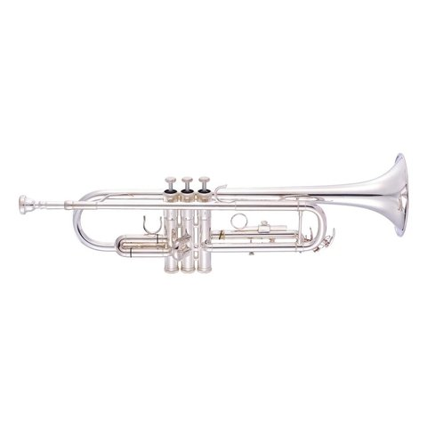
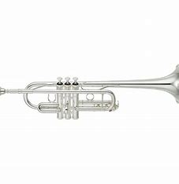
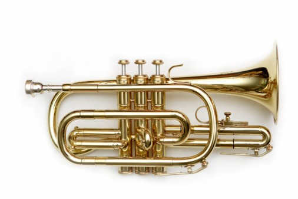
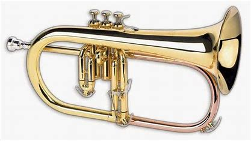
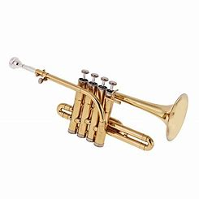
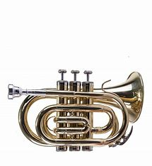

Las trompetas se clasifican según el tamaño, el material utilizado para diseñarlas y, lo que es más importante, la calidad del sonido que pueden ofrecer. La mayoría de la gente no reconoce ninguna diferencia en el tipo de sonido que emite una trompeta en particular.
Clasificación
Trompeta en si bemol
Este es el tipo de trompeta más común utilizado en la mayoría de los escenarios de jazz, estas trompetas son relativamente baratas, fáciles de tocar y muy populares. Según la mayoría de los instructores, estas trompetas son altamente consideradas como las mejores para principiantes y estudiantes.

Trompeta en do
Este es otro tipo de trompeta muy popular debido a su tamaño más corto y a su capacidad para ofrecer sonidos y melodías de alta calidad, estas trompetas son utilizadas principalmente por profesionales que actúan en escenarios orquestales.

La Corneta
a corneta es un pariente cercano de la trompeta que se distingue sobre todo por su agujero cónico, su forma compacta y sus tonos de alta calidad. Este instrumento musical es el preferido por la mayoría de los trompetistas profesionales, debido a su capacidad para emitir sonidos en si bemol y si bemol sin ningún problema.

Fliscorno Soprano
La trompeta fliscorno, es otro instrumento musical que se asemeja mucho a una corneta o a una trompeta normal. Diseñada con un tamaño pequeño y una boquilla grande, esta trompeta está hecha de latón y es capaz de ofrecer fácilmente melodías de bajo y soprano. A diferencia de sus predecesores, el flugelhorn es ligero, compacto y perfecto para cantar en escenarios relacionados con el jazz. Este, al igual que los demás está hecho de latón. Tiene tres válvulas, un diámetro mayor que el de la corneta, y se suele utilizar en si bemol, y ocasionalmente en do. Se inventó en Austria en la década de 1830.

La Trompeta Picollo
La trompeta piccolo o trompeta de flautín viene en varios tipos y tonos diferentes, es el miembro más pequeño de la familia de las trompetillas. Esta trompeta está diseñada para ofrecer un si bemol o una afinación en La. Aparte de su pequeño tamaño, la trompeta de flautín viene con 4 válvulas en lugar de las tres normales. Se utilizan principalmente en orquestas y escenarios religiosos, debido a su capacidad para emitir sonidos G, F y C

Trompeta de Bolsillo
Esta es una trompeta de tamaño compacto en si bemol, con el mismo rango de ejecución que la trompeta normal. La longitud del tubo, si se endereza, medirá lo mismo que la de una trompeta estándar. Sin embargo, el tubo se enrolla más firmemente que el de una trompeta estándar para reducir el tamaño del instrumento y conservar el sonido característico. La campana es generalmente de diámetro más pequeño que una trompeta estándar. No es un instrumento estandarizado que se encuentra en las secciones de metales de bandas de concierto u orquestas y generalmente se considera una novedad. Es usado principalmente por los trompetistas como un instrumento de práctica que puede ser empacado en una maleta y llevado a lugares donde llevar trompetas estándar sería un problema. Este tipo de trompeta es relativamente más corta, en comparación con una trompeta normal.
